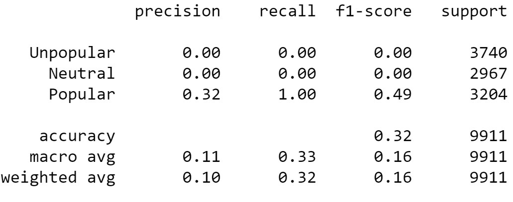

This section will cover the SVM portion of the assignment. SVM stands for support vector machine and its goal is to divide datasets into separate classes to find a maximum marginal hyperplane (MMH). For this section, I wanted to see if there was a correlation between the number of keywords and the number of shares an article has. I did this by extracting the data for the number of keywords, and the number of shares. I then divided the data into three categories: Unpopular, Neutral, and Popular. The result was the classification table that you see below. Overall, the test runs with 32% accuracy.
There are several sections to this classification table. The precision section shows the number of true positives over the number of true positive plus the number of false positives. The data shows that the unpopular and neutral sections scored a 0% whereas the popular section scored a 32%. The macro average was at 11% and the weighted average was at 10%.
The Recall section is the ratio of true positives over the number of true positives plus the number of false negatives. The data shows that the unpopular and neutral sections scored a 0% whereas the popular section scored a 100%. The macro average was at 33% and the weighted average was at 32%.
The F1-score conveys the balance between the precision and recall sections. The data shows that the unpopular and neutral sections scored a 0% whereas the popular section scored a 49%. Both the macro and weighted averages were at 16%.
The data leads me to conclude that there does not seem to be a correlation between the number of keywords and the number of shares when the article is either unpopular or neutral. There may be a weak correlation when the article is popular. However, the reality is that performing a test like this is the equivalent of flipping a three-sided coin, and it is no better at predicting than simply guessing how popular an article will be. Many other factors will play into an article’s popularity, such as what the topic is and who published the article; and those are things we cannot test with the dataset we were provided.